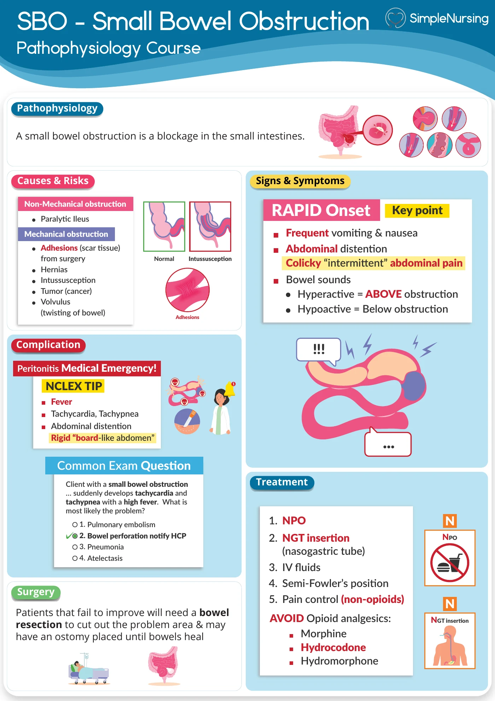

Which pairing correctly contrasts the presentation of a small bowel obstruction with that of a large bowel obstruction?
Answer
Small bowel obstruction — early, profuse vomiting; large bowel obstruction — marked abdominal distension
Reasoning
SBO: EARLY, PROFUSE VOMITING (may be bilious/fecal) WITH LESS DISTENSION.
Clinical detail
LBO: VOMITING IS LATE/ABSENT WITH MARKED DISTENSION. Both are managed with NPO + NG decompression. Marked distension with little or no vomiting points to the large bowel, not the small bowel.
Why the other answers do not fit
- Small bowel obstruction — early vomiting with marked distension; large bowel obstruction — late vomiting with minimal distension
Marked distension with little or no vomiting points to the large bowel, not the small bowel.
- Small bowel obstruction — vomiting that is late or absent; large bowel obstruction — minimal abdominal distension
Marked distension with little or no vomiting points to the large bowel, not the small bowel.
- Small bowel obstruction — marked abdominal distension; large bowel obstruction — early, profuse vomiting
Marked distension with little or no vomiting points to the large bowel, not the small bowel.
